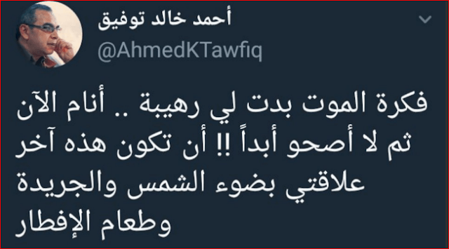
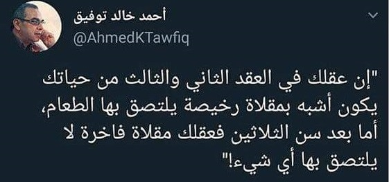

يعتبر أحمد خالد توفيق أديب الشباب الأول في الوطن العربي والذي حبّب الكثير في القراءة برواياته المشوقة وأسلوبه المتميز والساخر وشخصياته الفريدة-مثل رفعت إسماعيل-ولقربه من الشباب فكريًا وتواصله الدائم معهم، كما أن رواياته دائمًا ما تتناول الشعب المصري وما قد يحدث للبلاد في المستقبل.
متزوج من طبيبة أخصائية صدر من المنوفية اسمها منال ولديه منها ابن اسمه محمد وابنة اسمها مريم. أصيب بنوبتين قلبيتين، الأولى في 2011 والثانية في 2015 نتج عنهما أن أجرى جراحة زرع جهاز مهمته مراقبة النبض فإذا شعر باضطراب في القلب أطلق صدمة كهربائية تعيد القلب للحياة مرة أخرى، وأجبره الأطباء على الإقلاع عن التدخين. أما من حيث ديانة أحمد خالد توفيق ومعتقداته وطائفته الأصلية ، فقد ولد لعائلة مسلمة.
 
| سنة الإصدار | الرواية | دار النشر |
|---|---|---|
| 2008 | يوتوبيا | دار ميريت للنشر |
| 2013 | السنجة | مؤسسة قطر بلومزبري للنشر |
| 2014 | تأثير الجرادة: رواية مصورة | |
| 2015 | مثل إيكاروس | دار الشروق |
| 2016 | في ممر الفئران |
دار ليلى دار الكرمة للنشر والتوزيع |
| سنة الإصدار | المجموعة | دار النشر | ملاحظات |
|---|---|---|---|
| 2005 | قوس قزح | دار ليلى | بالاشتراك مع تامر إبراهيم |
| 2006 | عش ولا تقل للموت (لا) مرتين غدًا: مولوتوف 2 | دار ليلى | بالاشتراك مع محمد سامي وآخرين |
| 2007 | الأن نفتح الصندوق 1 |
دار ليلى دايموند بوك |
مجموعة قصصية |
| 2008 | عقل بلا جسد | دايموند بوك | مجموعة قصصية؛ أُعيد نشرها من قبل دار ليلى |
| حظك اليوم | دايموند بوك | مجموعة قصصية؛ أُعيد نشرها عام من قبل دار ليلى | |
| الغرفة رقم 207 | دايموند بوك | مجموعة قصصية؛ أُعيد نشرها عام من قبل دار ليلى | |
| 2009 | زغازيغ | دار ليلى | مجموعة مقالات |
| الآن أفهم | دار ليلى | مجموعة قصصية | |
| E.S.P | دار ليلى | مجموعة قصصية | |
| الأن نفتح الصندوق 2 |
دار ليلى دايموند بوك |
مجموعة قصصية | |
| 2010 | فقاقيع | دار ليلى | مجموعة مقالات |
| الغث من القول | دار ليلى | مجموعة مقالات | |
| الأن نفتح الصندوق 3 | دار ليلى | مجموعة قصصية | |
| 2012 | قهوة باليورانيوم |
دار كيان للنشر والتوزيع دار ليلى |
مجموعة مقالات |
| شاي بالنعناع | دار ليلى | مجموعة مقالات | |
| لست وحدك | سبارك للنشر والتوزيع | مجموعة قصصية | |
| ضحكات كئيبة | سبارك للنشر والتوزيع | مجموعة مقالات | |
| 2013 | وساوس وهلاوس | دار ليلى | مجموعة مقالات |
| 2014 | الهول | دار الكرمة للنشر والتوزيع | مجموعة قصصية |
| 2015 | شربة الحاج داود: مقالات عن العلم وشبه العلم | دار الكرمة للنشر والتوزيع | مجموعة مقالات |
| أفلام الحافظة الزرقاء | دار ليلى | مجموعة مقالات | |
| ولد قليل الأدب | دار ليلى | مجموعة مقالات |